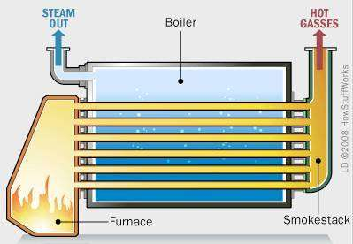

Ćwiczenie 3: Bilans Kotłowni Parowej
Projekt Termo-Tech – Etap 3: Para Wodna i Tablice Parowe
Wydział Inżynierii Środowiska i Inżynierii Mechanicznej


Projekt: Etap 3 – Kotłownia
Fabryka „Termo-Tech” wykorzystuje parę wodną do procesów technologicznych (np. pasteryzacja, suszenie). Obecny kocioł gazowy wytwarza parę o parametrach:

- Ciśnienie: \(p = 10\ \text{bar}\) (abs)
- Temperatura: \(t = 250\ \text{°C}\)
- Wydajność: \(\dot{m} = 2\ \text{t/h}\)
- Woda zasilająca: \(t_{\text{zas}} = 60\ \text{°C}\)
Twoje zadanie (jak w karcie projektowej):
- 3.1 – stan termodynamiczny pary
- 3.2 – moc cieplna kotła
- 3.3 – kosztorys: zużycie gazu ziemnego
- 3.4 – dławienie pary (\(h = \text{const}\))
- 3.5 – para mokra, stopień suchości \(x\)
- 3.6 – interpolacja w tablicach pary przegrzanej
- 3.7 – entropia w kotle
- 3.8 – bilans kondensatu
Zadanie 3.1: Stan termodynamiczny pary
Sprawdźmy, czy para na wylocie z kotła jest nasycona, mokra czy przegrzana.
Jak korzystać z tablic?
- W tablicy pary nasyconej wg ciśnienia (Załącznik A) znajdź wiersz \(p = 10\ \text{bar}\) \((= 1.0\ \text{MPa})\).
- Odczytaj temperaturę nasycenia \(t_{\text{sat}}\) (w tablicy: kolumna \(t_s\)).
- Porównaj rzeczywistą temperaturę \(t_{\text{rzecz}}\) z \(t_{\text{sat}}\).
Brak Twojego ciśnienia w tablicy? Interpoluj \(t_s\) liniowo między sąsiednimi wierszami.
Analiza:
- Załącznik A, wiersz 10 bar: \(t_{\text{sat}} = 179.9\ \text{°C}\).
- Mamy: \(t_{\text{rzecz}} = 250\ \text{°C}\).
Wniosek
\(t_{\text{rzecz}} > t_{\text{sat}}\) (przegrzanie \(250 - 179.9 \approx 70\ \text{K}\)), więc jest to para przegrzana. Entalpię odczytamy z tablic pary przegrzanej (Załącznik B).
Zadanie 3.2: Moc cieplna kotła
Kocioł podgrzewa wodę zasilającą o temperaturze \(t_{\text{zas}} = 60\ \text{°C}\) do postaci pary przegrzanej (\(10\ \text{bar}\), \(250\ \text{°C}\)).
Dane:
- Woda zasilająca (\(60\ \text{°C}\), ciecz):
- \(h_1 \approx c_w \cdot t_{\text{zas}} = 4.19 \cdot 60 = \mathbf{251.4\ \text{kJ/kg}}\)
- Załącznik A2 (60 °C): \(h' = 251.2\ \text{kJ/kg}\) – różnica pomijalna
- Para wylotowa (\(10\ \text{bar}\), \(250\ \text{°C}\)):
- Tablica B2, kolumna 1,0 MPa, wiersz 250 °C: \(h_2 = \mathbf{2943\ \text{kJ/kg}}\)
Moc cieplna kotła \(\dot{Q}\):
\[ \dot{Q} = \dot{m} \cdot (h_2 - h_1) \] \[ \dot{m} = 2\ \text{t/h} = \frac{2 \cdot 1000}{3600} \approx 0.5556\ \text{kg/s} \]
\[ \dot{Q} = 0.5556 \cdot (2943 - 251.4) \] \[ \dot{Q} \approx 1495\ \text{kW} \approx \mathbf{1.5\ \text{MW}} \]
Zadanie 3.3: Kosztorys – zużycie gazu
Ile gazu ziemnego zużywa kocioł, jeśli jego sprawność wynosi \(\eta_k = 0.90\)?
- Wartość opałowa gazu (metan): \(W_d \approx 50\ \text{MJ/kg} = 50\,000\ \text{kJ/kg}\).
- Gęstość gazu: \(\rho_{\text{gaz}} \approx 0.7\ \text{kg/m}^3\).
Bilans paliwa:
\[ \dot{Q}_{\text{paliwa}} = \dot{m}_{\text{gaz}} \cdot W_d = \frac{\dot{Q}}{\eta_k} = \frac{1495\ \text{kW}}{0.90} \approx 1661\ \text{kW} \] (\(\dot{Q}\) – moc cieplna kotła z Zad. 3.2)
\[ \dot{m}_{\text{gaz}} = \frac{\dot{Q}_{\text{paliwa}}}{W_d} = \frac{1661\ \text{kJ/s}}{50\,000\ \text{kJ/kg}} \approx 0.0332\ \text{kg/s} \]
W jednostkach handlowych (m³/h):
\[ \dot{V}_{\text{gaz}} = \frac{\dot{m}_{\text{gaz}} \cdot 3600}{\rho_{\text{gaz}}} = \frac{0.0332 \cdot 3600}{0.7} \approx \mathbf{171\ \text{m}^3\text{/h}} \]
Jednym wzorem (jak w karcie projektowej)
\[ \dot{V}_{\text{gaz}} = \frac{\dot{Q}}{\eta_k \cdot W_d \cdot \rho_{\text{gaz}}} \cdot 3600 = \frac{1495}{0.90 \cdot 50\,000 \cdot 0.7} \cdot 3600 \approx 171\ \text{m}^3\text{/h} \qquad (\dot{Q}\ \text{w kW},\ W_d\ \text{w kJ/kg}) \]
Zadanie 3.4: Dławienie Pary (h = const)
Przed wejściem do wymiennika ciepła ciśnienie pary jest redukowane zaworem redukcyjnym (dławienie) z \(p_2 = 10\ \text{bar}\) do \(p_3 = 2\ \text{bar}\). Proces dławienia jest izentalpowy: \(h_3 = h_2\).
Pytanie: Jaka będzie temperatura pary po dławieniu?
- Stan początkowy: \(h_2 = 2943\ \text{kJ/kg}\) (\(10\ \text{bar}\), \(250\ \text{°C}\) – z Zad. 3.2).
- Stan końcowy: \(p_3 = 2\ \text{bar}\), \(h_3 = h_2 = 2943\ \text{kJ/kg}\).
Załącznik A, wiersz 2 bar:
- \(h'' = 2707\ \text{kJ/kg}\) (para sucha nasycona, \(x = 1\)).
- \(h_3 > h''\) (\(2943 > 2707\)) → nadal para przegrzana!
Zadanie 3.4 (cd.): Odczyt temperatury z tablic
Tablica B1, kolumna 0,2 MPa (= 2 bar)
| \(t\) [°C] | \(h\) [kJ/kg] |
|---|---|
| 200 | 2870 |
| 250 | 2971 |
Szukamy temperatury, przy której \(h_3 = 2943\ \text{kJ/kg}\) – leży ona między 200 a 250 °C. Interpolacja „odwrotna” (znamy \(h\), szukamy \(t\)):
\[ t_3 = t_a + \frac{h_3 - h_a}{h_b - h_a} \cdot (t_b - t_a) \]
\[ t_3 = 200 + \frac{2943 - 2870}{2971 - 2870} \cdot (250 - 200) = 200 + 0.723 \cdot 50 \approx \mathbf{236.1\ \text{°C}} \]
Wniosek
Dławienie obniżyło ciśnienie drastycznie (10 → 2 bar), ale temperatura spadła nieznacznie (250 → 236 °C). Para stała się „bardziej” przegrzana: przegrzanie wzrosło z \(250 - 179.9 \approx 70\ \text{K}\) do \(236.1 - 120.2 \approx 116\ \text{K}\).
Uwaga: jeśli \(h_3\) leży między \(h''\) (wiersz pogrubiony, \(x = 1\)) a pierwszym wierszem tablicy przegrzania, interpoluj od stanu nasycenia: \(t_a = t_s\) (Załącznik A), \(h_a = h''\).
Zadanie 3.5: Para Mokra – Stopień Suchości
W odbiorniku pary (wymiennik ciepła za zaworem redukcyjnym) para skrapla się częściowo. Serwisant zmierzył ciśnienie \(p = 2\ \text{bar}\) i temperaturę \(t = 120.2\ \text{°C}\).
Czy para jest mokra, sucha nasycona, czy przegrzana?
Załącznik A, wiersz 2 bar: \(t_s = 120.2\ \text{°C}\), \(h' = 504.7\ \text{kJ/kg}\), \(h'' = 2707\ \text{kJ/kg}\).
\(t = t_s\) → para nasycona: mokra albo sucha. Ciśnienie i temperatura nie wystarczą do określenia stanu – potrzebny jest trzeci parametr, np. entalpia.
Jeśli z bilansu (lub kalorymetru dławiącego) wiemy, że \(h_{\text{pomiar}} = 2400\ \text{kJ/kg} < h''\), para jest mokra: \[ x = \frac{h_{\text{pomiar}} - h'}{h'' - h'} = \frac{2400 - 504.7}{2707 - 504.7} = \frac{1895.3}{2202.3} \approx \mathbf{0.86} \]
Uwaga
\(x = 0.86\) oznacza, że 14% masy stanowią krople wody! W turbinie byłoby to niebezpieczne dla łopatek (erozja), w wymienniku ciepła jest to normalne.
Zadanie 3.6: Interpolacja w Tablicach
Producent kotła proponuje podniesienie temperatury pary do \(t = 275\ \text{°C}\) przy tym samym ciśnieniu \(p = 10\ \text{bar}\). Takiej temperatury nie ma w tablicach – odczytaj \(h\) i \(s\) dla sąsiednich temperatur (250 i 300 °C) i zastosuj interpolację liniową.
Tablica B2, kolumna 1,0 MPa (= 10 bar)
| \(t\) [°C] | \(h\) [kJ/kg] | \(s\) [kJ/(kg·K)] |
|---|---|---|
| 250 | 2943 | 6.926 |
| 300 | 3052 | 7.125 |
Interpolacja dla \(t = 275\ \text{°C}\) (w połowie przedziału):
\[ h_{275} = 2943 + \frac{275 - 250}{300 - 250} \cdot (3052 - 2943) = 2943 + 0.5 \cdot 109 \approx \mathbf{2997.5\ \text{kJ/kg}} \]
\[ s_{275} = 6.926 + 0.5 \cdot (7.125 - 6.926) = 6.926 + 0.0995 \approx \mathbf{7.026\ \text{kJ/(kg·K)}} \]
Zadanie 3.7: Entropia w Kotle
Oblicz zmianę entropii wody/pary w procesie parowania w kotle (z Zadania 3.2): woda \(60\ \text{°C}\) → para \(10\ \text{bar}\), \(250\ \text{°C}\).
Z tablic:
- Woda zasilająca (\(60\ \text{°C}\)) – Załącznik A2, wiersz 60 °C: \(s_1 = s' = 0.831\ \text{kJ/(kg·K)}\).
- Para wylotowa (\(10\ \text{bar}\), \(250\ \text{°C}\)) – Tablica B2, kolumna 1,0 MPa: \(s_2 = 6.926\ \text{kJ/(kg·K)}\).
Zmiana entropii (na 1 kg): \[ \Delta s = s_2 - s_1 = 6.926 - 0.831 = \mathbf{6.095\ \text{kJ/(kg·K)}} \]
Strumień entropii: \[ \dot{S} = \dot{m} \cdot \Delta s = 0.5556 \cdot 6.095 \approx \mathbf{3.39\ \text{kW/K}} \]
Skąd ten wzrost entropii?
Entropia wody rośnie, bo doprowadzamy do niej ciepło (\(dS = \delta Q / T\)) – sam ten wzrost nie dowodzi nieodwracalności.
O nieodwracalności świadczy bilans ze spalinami: ciepło płynie od spalin o temperaturze \(T_{\text{spalin}} \approx 1500\ \text{K}\) do wody/pary (60–250 °C) przy dużej różnicy temperatur. Spaliny tracą entropię \(\dot{Q}/T_{\text{spalin}}\), woda zyskuje znacznie więcej: \[ \dot{S}_{\text{gen}} = \dot{m}\,\Delta s - \frac{\dot{Q}}{T_{\text{spalin}}} \approx 3.39 - \frac{1495}{1500} \approx 2.4\ \text{kW/K} > 0 \] Do tego dochodzi nieodwracalność samego spalania.
Zadanie 3.8: Bilans Kondensatu
Wymiennik ciepła (odbiornik) skrapla parę po dławieniu (\(2\ \text{bar}\), \(236\ \text{°C}\)) do wrzątku – cieczy nasyconej przy tym samym ciśnieniu, \(t_s = 120.2\ \text{°C}\). Kondensat wraca do kotła.
Ile ciepła oddaje 1 kg pary w wymienniku?
Z tablic:
- \(h_{\text{para}} = h_3 = h_2 = 2943\ \text{kJ/kg}\) (para po dławieniu, 2 bar, 236 °C; dławienie: \(h = \text{const}\))
- \(h' = 504.7\ \text{kJ/kg}\) (Załącznik A, wiersz 2 bar – ciecz nasycona)
\[ q_{\text{wym}} = h_{\text{para}} - h' = 2943 - 504.7 = \mathbf{2438.3\ \text{kJ/kg}} \]
Moc cieplna wymiennika (przy \(\dot{m} = 0.5556\ \text{kg/s}\)): \[ \dot{Q}_{\text{wym}} = \dot{m} \cdot q_{\text{wym}} = 0.5556 \cdot 2438.3 \approx \mathbf{1355\ \text{kW} \approx 1.35\ \text{MW}} \]
Wniosek
Prawie cała moc kotła (≈ 91% z 1495 kW) trafia do wymiennika. Pozostałe ≈ 140 kW \(= \dot{m}\,(h' - h_1)\) to ciepło, które kondensat (120 °C) traci, zanim wróci do kotła jako woda zasilająca 60 °C – można je odzyskać, np. podgrzewając nim wodę zasilającą.
Zadanie Domowe (Raport 3)
Temat: Kocioł kondensacyjny?
Inżynier proponuje wymianę kotła na kondensacyjny. Aby to miało sens, musimy odzyskać ciepło skraplania pary wodnej ze spalin.
- Przy spalaniu \(1\ \text{m}^3\) gazu (warunki normalne) powstaje ok. \(1.6\ \text{kg}\) wody w spalinach.
- Ciepło skraplania wody (przy ok. 40 °C) \(r \approx 2400\ \text{kJ/kg}\).
- Nasz kocioł zużywa \(171\ \text{m}^3\text{/h}\) gazu.
Oblicz: Jaki dodatkowy strumień ciepła [kW] możemy odzyskać, jeśli skroplimy całą parę wodną ze spalin? O ile punktów procentowych wzrośnie sprawność kotłowni?
Wskazówka: sprawność liczona względem wartości opałowej \(W_d\) może przekroczyć 100% – dlaczego?
Termodynamika Techniczna – Ćwiczenia (Ć3)